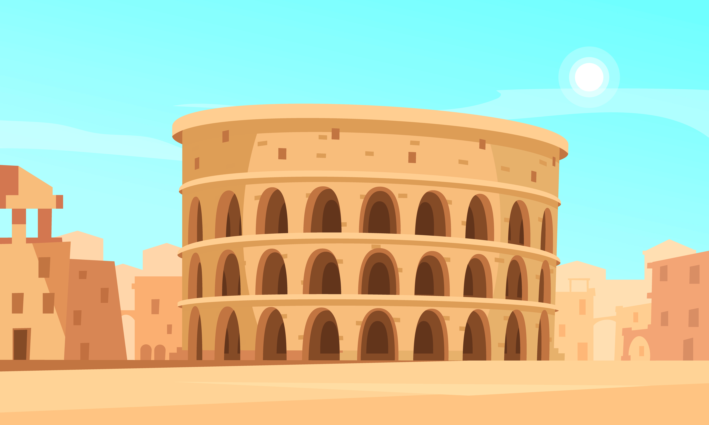

Fòrum
+ Afegir
Quins llocs voleu visitar a Roma?

Albert Martí
4 Maig · 19:42
Podem anar fent una llista amb monuments, barris o llocs que ens agradaria veure durant el viatge per organitzar millor els dies.
Respon
23 Comentaris
20
Com ens organitzem pels dies del viatge?

Paula Margarit
6 Maig · 11:08
Podríem començar a decidir horaris, activitats i plans per cada dia per aprofitar millor el temps i evitar improvisar tant.
Respon
23 Comentaris
20
Transport entre ciutats

Nil Grau
10 Maig · 22:17
He estat mirant opcions de tren per moure’ns entre Roma, Florència i altres ciutats. Si trobeu opcions millors les podem comentar aquí.
Respon
23 Comentaris
20